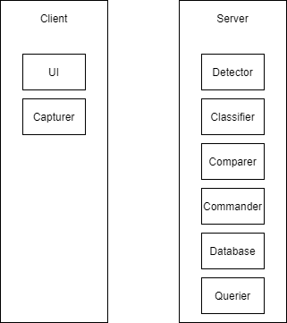

GEZR is a web application that captures webcam video streams as to detect, classify, compare, and synchronize hand and arm gestures,
as well as offer statistics of interest. This is a technical report of its modelling, functionality and other considerations.
Modules

Modules Overview
UI - the user-interactable component
Capturer - captures the webcam stream
Detector - identifies the hand & arm - related points
Classifier - classifies the points as a pose and gesture
Comparer - compares two streams in terms of their classified gestures and start-end points
Commander - issues actions based on the registered gestures